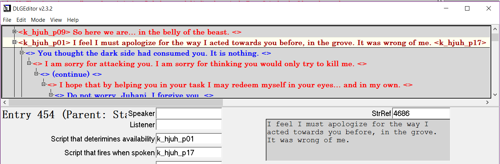

Evidence of Juhani being a Lesbian from Star Wars: Knights of the Old Republic's Game Files
Originally published on July 15, 2017 on Tumblr
The fact that Juhani from Star Wars: Knights of the Old Republic is a canon lesbian character is a fairly common knowledge among LGBTQ+ fans of Star Wars. However, occasionally I still see people who do not know that the first KotOR game has the very first confirmed gay character in any Star Wars media, including the old Star Wars Expanded Universe; there are some other people who actually believe that Juhani is bisexual.
Therefore, as a lesbian and someone who has made mods for the Knights of the Old Republic games and written a detailed Juhani romance guide, I would like to present hard evidence from the game files to point out that Juhani is in fact a lesbian, a woman who is exclusively attracted to women.
The most crucial evidence comes from k_hjuh_dialog.dlg, Juhani’s main dialogue file which contains all the conversations covered in my Juhani Romance Guide. If you use the KotOR Tool to browse the game files, k_hjuh_dialog.dlg is under KotOR I > BIFs > templates.bif > Dialog. I recommend using DLGEditor to view the .dlg files from KotOR games.
Here is a screenshot of my DLGEditor with the most relevant part of the k_hjuh_dialog.dlg file:

The highlighted dialogue shown in the screenshot (”I feel I must apologize for the way I acted towards you before, in the grove. It was wrong of me.”) is the beginning of your first personal conversation with Juhani after Juhani joins your party. Here is a video of the conversation in question:
As shown in the screenshot above, once you begin this conversation, the script k_hjuh_p17 will fire, and this is the source of the script in question:
void main()
{
int iGender = GetGender(GetPCSpeaker());
if (iGender == GENDER_FEMALE)
{
SetGlobalBoolean("T_JUHANIROM", TRUE);
}
}
(In KotOR Tool, you can see the source script k_hjuh_p17.nss under KotOR I > BIFs > scripts.bif > Script, Source)
As you may have guessed from the above script, k_hjuh_p17 sets the Global Boolean T_JUHANIROM to TRUE if, and ONLY IF, the player character is female. The T_JUHANIROM global is used by the game to check if Juhani’s romance is active or not. In other words, the game activates Juhani’s romance ONLY IF your player character is female, as soon as you start Juhani’s personal conversation after she joins your party. If your player character is male, Juhani’s romance will NOT be activated.
Here is the hard evidence from KotOR's game files that Juhani is a lesbian, a woman who is exclusively attracted to women. Juhani is NOT straight. Juhani is NOT bisexual.
The game used to have a bug that allowed male player characters to access Juhani’s romance, which is probably why some thought that Juhani is bisexual. However, the bug had been fixed in later patches. By fixing the bug, the game has made sure that ONLY a female player character can romance Juhani.
Even though the word “lesbian” or “gay” is never used in any of the KotOR games, it does not change the fact that Juhani is a woman character who can only be romanced by a woman player character, which means Juhani is gay, a lesbian.
In conclusion, Juhani is a canon lesbian character and has always been intended to be such.
I would also like to emphasise that I DO NOT support any mods that make Juhani a romance option for male characters under any circumstances, because such mods would be erasing the identity of the very first confirmed lesbian character in any Star Wars media. Not to mention, Juhani is the ONLY confirmed LGBTQ+ character in the entire KotOR series (Belaya from KotOR 1 and Luxa from KotOR 2 are heavily implied to be gay or bisexual, but their sexuality is never confirmed). Please respect LGBTQ+ representation and the identities of canon LGBTQ+ characters.